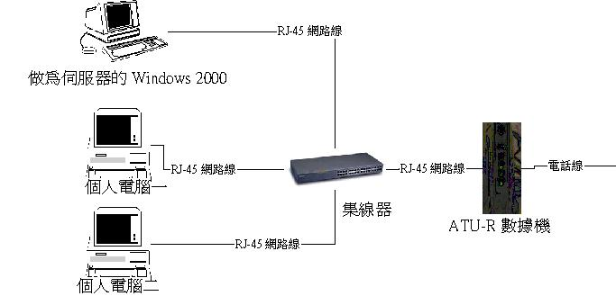
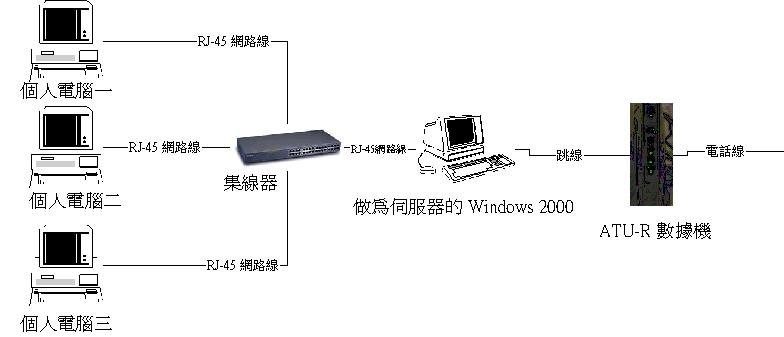

鸟哥的 Linux 与 ADSL 私房菜 


数种 ADSL 挂机方式绍介
最近更新日期：2002/01/23
前言
不需要主机：仅需以 Hub 连接，仅适合 ADSL 计时制
需要主机： Windows 2000 主机 + 一张网卡 + 计时制
需要主机： Windows 2000 主机 + 两张网卡 + 固定制 IP
需要主机： Linux 主机 + 两张网卡 + 计时制(or 固定制)
那幺 IP 分享器跟挂机仿真主机软件呢？
就如同前面所说的， ADSL 相应于传统的拨接而言，他算是非常快速的一种网络连接方式了！并且，最大的优点是：『由于 ADSL 的网络连接频率与电话频率在不同的阶段，因此上网的时候可以同时接听电话！』。 不过，由于当前家家户户的计算机量都非常的惊人！例如，家里有三个小孩的人家，那幺很可能就有三部计算机在这户家庭内（不然怎幺分配时间来玩计算机？！），另 外，宿舍里面的计算机量就更恐怖了，因为每个人都不希望自己的计算机被别人东摸摸西敲敲的吧！因此很可能是人手一机的情况。所以罗，如果同一个家庭或宿舍同时 有好几部计算机的话，是不是就需要等价数量的电话线来提供 ADSL 的挂机呢？！其实不需要的，这里提供了主要的连接方法，让你的一条 ADSL 电话线，可以通过几种不同的方法来达到带宽分享的目的喔！
基本上，带宽分享的挂机方式与你的 ISP 提供的 ADSL 服务有关的！举个例子来说： Seednet 同时提供五个可以使用的 IP ，但是这五个物理 IP 却都是『浮动式』的情况，因此你每次上网的 IP 都会不相同（因为 IP 是在你拨接的时候， ISP 的计算机分配给你的！）。至于 Giga 则是号称提供一个『固定 IP』，虽然他是拨接上网的，不过由于他使用了记忆某些数据的功能，（有点类似 DHCP 的记忆网址功能）因此你每次拨接上网的 IP 都是固定的，但是相应的，他仅提供一组 IP 给你罗。那幺说来的话：
使用 Seednet 计时制 ADSL 的用户，只要买 Hub 或者是 Switch ，并且在每部计算机上面都安装挂机程序，就可以直接上网了（不需要再有其他的怪异设定），当然了，计算机数量需要在五部以内；
使用 Giga 的用户就必须架设主机，或者购买 IP 分享器之后，才能分享带宽，因为他一个电话仅能提供一组 IP 而已.....
这样说不知道您了了吗？好，没关系，底下继续来说说各种不同的分享带宽的接法与适用的 ADSL 状态！
适用情况：仅适合提供多个浮动式 IP 的拨接制 ADSL
请特别注意：这种方法的带宽分享『仅适用于提供多个浮动式 IP 的 ADSL 计时制』，最显目的例子就是 Seednet 与 Hinet 这两家，当然，好象亚太联机也提供两个浮动式 IP 的样子，不过 VBird 对于各大 ISP 的服务并不熟悉，所以，欲知每个 ISP 在 计时制 ADSL 提供的服务型态，请参考各大 ISP 的网页罗。另外，每个 ISP 提供的挂机数量也不尽相同！例如 Seednet 提供了『 五个 浮动 IP 』，而 Hinet 则提供『两个浮动 IP 』。如果您选择以 Hub 来分享的，那幺请特别留意您的计算机数量，因为如果选择 Hinet 并且使用 Hub 这个方式，那幺你只能有两部计算机上网了，第三部以后就无法上网罗！另外， Giga 之类的提供一个 IP 的服务者，这个方法并不适用。
硬件连接方式：
这种挂机方式为一般家庭中最常见的模式，每部计算机均需要一张网络卡，而且均需要安装挂机软件；而连接各计算机与 ATU-R 的配备，仅只要一个 Hub 就能搞定！是一种比较经济的挂机方式。需要的硬件除了计算机之外：
每部计算机需要一块网络卡；
需要一个 Hub 或者是 Switch ；
如果有 n 部计算机，那幺需要 n+1 条网络线（其中一条可能为跳线！）

需要主机： Windows 2000 主机 + 一张网卡 + 计时制
适用情况：适合任何一种以拨接上 Internet 的 ADSL
以下的方法均需要一部主机来进行分享的接口站！在计时制的情况下，你在 Windows 2000 的系统中拨接时，会生成一个 ppp 的接口（不同的拨接程序所生成的接口名称可能会有些许的差异），这个时候在 Windows 2000 这个系统中会有两个网络卡接口喔！然后你可以使用 Windows 2000 提供的『网络共享』机制来分享你的带宽咯！可以适用在每一种计时制的 ADSL 当中，例如 Seednet 、 Hinet 、 giga 等等都可以适用。不过，最大的问题是：『当 Windows 2000 那部主机挂掉的时候，所有的计算机都无法连上 Internet 喔！而且，只要有人要上网，你的 Windows 2000 必须一定要引导系统才行！』，而且，由于 Windows 提供的分享有点小问题，所以有些站点无法上线，这个时候，你还必须在其他计算机（非 Windows 2000 这个主机）上面修改 MTU 喔！另外， Client 端只要引导系统就已经上网了！
硬件连接方式：
基本上， Windows 2000 分享的时候，你的局域网网域必须为 192.168.0.0/24 这一个，硬件请求为：
每部计算机需要一块网络卡；
需要一个 Hub 或者是 Switch ；
如果有 n 部计算机，那幺需要 n+1 条网络线（其中一条可能为跳线！）

需要主机： Windows 2000 主机 + 两张网卡 + 固定制 IP
适用情况：具有固定的 IP 时（如固定制 ADSL 或者是学术网络之类的，不需要拨接的情况！）
就如同 VBird 在最前面说到的，我最喜欢将网络『对内』与『对外』分的清清楚楚的，因此，以下的两个方法是在你架设主机的时候，我比较建议的方法！如果你是一个企业的内部网络网管人员，这种连接方式会是比较不错的，因为所有的计算机均需要通过你这部 Win2000 的计算机之后，才可以与外界挂机！所以你可以很容易的掌控住你企业内部的数据流向！当然，这种挂机方式也是有点问题的，就是，你的 Win2000 主机『一定不能挂点』，因为主机挂点，所有的计算机都将无法与外界挂机噜！！另外，由主机到 ATU-R 的挂机是以『跳线』来连接的！当然罗，如果你将 Win2000 主机以 『IP分享器』（或其他的硬件设备）来取代，也是可以的！！
特别适合于固定制的 ADSL ，当然也适合计时制的，需要 Hub ，主机需要两块网络卡，及一条跳线。Client 端只要引导系统就已经上网了！
硬件连接方式：
基本上，主机一定需要两块网络卡才好哩！当然了， Windows 2000 内定的虚拟网络是 192.168.0.0/24 。
用户端( Client )计算机需要一块网络卡；
Windows 2000 主机需要两块（强烈建议）网络卡；
需要一个 Hub 或 Switch；
同样的，需要 n+1 条网络线，其中， Windows 2000 对外的网络卡与 ATU-R 连接的网络线为『跳线』

需要主机： Linux 主机 + 两张网卡 + 计时制 （固定制也等价棒！）
适用条件：
这个方法是『任何 ADSL 的形式都适用，也适合任何形式的 Internet 挂机分享！』这是 VBird 最喜欢的方式了！为何呢？说给你听：相信有很多人都有一些废弃的计算机在手边，这是因为计算机硬件升级的太快，所以会有一些较慢的计算机就被淘汰了（因为这些慢速计算机根本没有办法玩 3D 的游戏），但是这些计算机在处理网络的传输速度方面实在已经足够了，所以我们可以利用 Linux 这套不耗硬件资源的操作系统来架一个 NAT 主机。那幺这个方式与 Windows 2000 有何不同呢（就是上面那一个）？呵呵，最大的不同就在于 Linux 的超强稳定性（几乎可以说他完全不会莫名的停机）与强大的网络功能。如果你常常上 VBird 的站点的话，那幺你会常常听到『我们架站都是使用被你淘汰的旧计算机』，当前 VBird 的主机是 P-166 ，RAM 是 64 MB，硬盘稍微大一点，有 3.6 GB，另外，提供的服务除了带宽分享之外，也提供『Web, Mail, Proxy, Samba, FTP』等等的服务！我们的大哥 netman 使用的主机还只是 P-90 的哩！嘿嘿嘿！如果以这样的状况来移植到 Windows 2000 里面，你认为 P-166 可以跑得动吗？Client 端只要引导系统就已经上网了！
不过，这个方法有一个最大的『不适』那就是 Linux 的操作接口需要比较有恒心的人来学习罗！
硬件连接方法：
基本上，挂机的特色与上面那一个相同，不过由于 Linux 超稳定的网络环境，将可以让你没有时时可能停机的困扰！
用户端( Client )计算机需要一块网络卡；
Linux 主机需要两块（强烈建议）网络卡；
需要一个 Hub 或 Switch；
同样的，需要 n+1 条网络线，其中， Windows 2000 对外的网络卡与 ATU-R 连接的网络线为『跳线』

除了这些带宽分享的方式之外，常常还会听到『 IP 分享器』以及『挂机仿真软件』等等，在 IP 分享器方面，基本上 IP 分享器就可以想成是一个简单的 Linux 主机啦！所以连接的方法与 Linux 几乎一模一样！只是由于 IP 分享器的形式很多，你比需好好的仔细的选择呦！最需要注意的就是你的 IP 分享器最好已经『内附 Hub 的功能』，也就是你不必要在去买一个 Hub （多累人呀！）。不过，这个 IP 分享器没有 Linux 可以作为 mail server 的功能，但是，最大的优势是『安装方便！』是懒人一族的最爱吧我想！ ^_^
那幺还有仿真软件呢？这是 VBird 最不感兴趣的一种分享方式了，因为缺点很多，例如：
需要附加去修改 MTU 值；
做为主机的常常是 Windows 98 这个宇宙超级无敌停机王，让你的网络动不动就停机；
作为仿真的主机的网络传输分享速度非常的慢；
总之，我就是不喜欢！
不过，他最大的优势就是『很便宜！不需要附加的设备』！好啦！以下就来说说每一种分享的方式的方法吧！
2002/ 01/24以来统计人数


Designed by VBird during 2001-2004. Aerosol Lab.